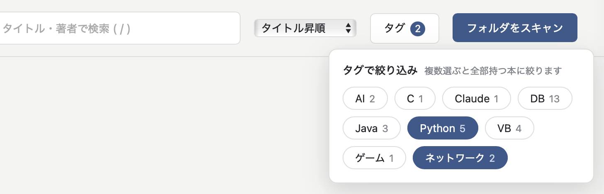

About
買った本のPDFが増えてくると、Finderだけでは著者やジャンル毎での管理が難しくなってきます。 BookLibは、PDFの入ったフォルダを一切いじらずに、ブラウザから表紙付きの 本棚として検索・タグ管理できるようにする、一人用のローカルアプリです。
インストール不要
macOS標準のPython3だけで動作。pipもNode.jsも使いません。zipを展開したらすぐ使えます。
ファイルには指一本触れない
本の同一性を内容で管理しているので、ファイルをリネームしてもフォルダを整理してもタグが追従します。PDF本体の移動・書き換えは一切しません。
タグと検索
タイトル・著者の部分一致検索と、複数タグのAND絞り込み。表紙サムネイルは自動生成されます。
開くのも閉じるのもワンクリック
付属ツールでアプリ化すれば、ダブルクリックで起動してブラウザが開き、タブを閉じればサーバも自動終了します。
How to use
- 下のボタンからzipをダウンロードして展開する
- ターミナルで
python3 BookLib/app.py ~/Documents/あなたのPDFフォルダを実行する(引数なしなら BookLib 内に書庫フォルダが自動作成されます) - ブラウザで
http://localhost:8323/を開き、右上の「フォルダをスキャン」を押す - 表紙をクリックすると、タイトル・著者・タグを編集できます。本を買ったらフォルダに入れて再スキャンするだけ
ダブルクリック起動のアプリ化や詳しい使い方は、同梱の「はじめにお読みください.txt」にまとめてあります。

Requirements
- macOS(表紙サムネイルの生成に標準コマンドを使用)
- Python 3.9以上(macOS同梱のもので可・追加インストール不要)
- アプリのデータは書庫フォルダ内の1か所だけに保存。そこを消せば完全にアンインストールできます
Download
Download BookLib.zip約31KB / macOS用 / 無料